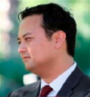

Core Solutions
Cinq Music is the ultimate music rights management company, allowing artists to reach their fans via hundreds of digital, physical and mobile retailers around the world and collecting revenues for these uses.
Cinq was incubated in 2012 as a pure play digital music distribution solution but soon changed its model to help independent artists looking to grow their careers through leveraging a three hundred sixty degree approach to their music and video assets.
Recently the company was chosen as a finalist for the 2016 Latin Billboard Music Awards. The company was nominated in the category of “Latin Rhythm Album Label Of The Year”.
Last year, the company received aggressive investment via GoDigital Media Group. The additional capital enabled Cinq Music to grow its rights portfolio through financing catalog acquisitions, advances to artists, and to produce new forms of globally appealing music content.
AdShare™ is the leading social media monetization service for music, film, television, and sports rights-holders. It brings together a technology oriented multi-disciplinary approach to monetizing fan engagement online.
AdShare’s offerings include providing full service YouTube monetization and for existing YouTube Partners, the most robust and effective Optimization service on the market – generating substantial new revenue for its clients.
Over 200 major media clients trust AdShare to monetize their brands and more than two million of their copyrights online. Nearly 800 million people from around the world engage with content represented by AdShare™ every month.
AdShare. Engaging fans. Monetizing brands.™
ContentBridge is a leading provider of digital supply chain solutions for the media and entertainment industry. Through our direct involvement with major studios, independent distributors, and leading consumer services like iTunes and Netflix, we have developed automation software and best practices for efficiently managing and distributing digital content among business partners worldwide.
This year, ContentBridge completed a move to the Equinix Data Center in El Segundo, setting its sights on altering the industry’s digital supply chain business model via a scalable and robust data center solution.
By establishing Equinix as the “point of orchestration” for owned infrastructure and Tier 1 cloud providers, ContentBridge will be capable of offering the lowest cost, most secure and highest performing digital supply chain solution for the entertainment industry. The company can eliminate an aging, proprietary and costly-to-maintain hardware infrastructure, create a more reliable and secure link between its client services team and its “factory”, and improve responsiveness by consolidating operations under one roof.
Already ranked #3 worldwide by ComScore, VidaPrimo.com is a true multi-channel, multi-platform network that is the premier destination for Latin music audiences.
Through AdShare, VidaPrimo engages both fans and brands, providing advertisers opportunities to engage more Millennials in the process.
VidaPrimo is fast becoming a global media company that provides advertisers access to an exploding marketplace of US and Latin American Millennials as they consume the hottest content in the young Hispanic culture. Through contracts with 75+ of the hottest Latin Rhythm artists, VidaPrimo is one of the largest Latin Music MCNs with presence across YouTube and VidaPrimo.com. With 60mm+ monthly views in the US and over 400mm across Latin America, VidaPrimo reaches 25% of US based Hispanic Millennials and an average of 20% of Millennials in Latin American countries. The VidaPrimo advertising platform leverages its massive reach of engaged Latin Millennials and connects them with brands through high quality instream videos opportunities in front of premium content. Additionally, VidaPrimo offers display, creative product integration, custom video and activation opportunities.
In 2016 GoDigital Media Group acquired a substantial interest in Tunnel Post.
Tunnel Post is a substantial post-production operation with services that extend far beyond functions of online and offline editing, capture, finishing or the restoration of film and video.
Tunnel Post helps solve the digital distribution challenge.
The company addresses a digital world where there are more distribution partners than ever, with an increasing number of delivery specifications and demands.
Add to that the demands of tracking sales and revenue-sharing deals across many platforms, a common pain point for all content creators.
Tunnel Post is synergistic with GoDigital’s other production, distribution and exhibition activities.
TerraScale is an Innovation Lab at GoDigital Media Group. Our expertise supports all GoDigital Media Group companies, applying core technologies to architecture, development, maintenance, support and future platforms evolution.
At TerraScale we define innovation as a social, collaborative process involving engineers, scientists, researchers and industry professionals working together on new problems and opportunities raised by technological and evolutional change. Our mission is to foster real-world innovation at the dynamic intersection of the media industry and technology.
Our recent works include a Content ID service with advanced audio fingerprinting; analyzing and optimizing a major music conglomerates rights database leading to a near doubling of catalog income; powering the next generation of the digital supply chain for the world’s largest motion picture studio leading to a cost savings in excess of $100mm.
By operating in multiple segments of the value chain for media, we have the opportunity to work with the latest technologies and frameworks. We innovate new approaches and apply the best to our in-house tools and daily processes. We always implement industry best practices, including architecture and coding standards.
"GoDigital is at the heart of transforming the media business"
About GoDigital
GoDigital Media Group
Twelve years ago, before iTunes, Netflix streaming, and YouTube, GoDigital Media Group Chairman Jason Peterson presupposed a world where consumers would jettison their CD’s and DVD’s in favor of digital entertainment. Six years ago he decided to do something about it, founding GoDigital Media Group (GDMG) as an incubator. Since then GDMG has founded five companies at the intersection of media and technology to help content owners manage, market, and monetize their product in a complex digital world. The companies are GoDigital inc, Cinq Music, AdShare, ContentBridge Systems, and most recently Media Aggregators. Several more are in the pipeline.
About GDMG
Transforming and Restoring The Media Business
It is no secret that the media industry is under duress as the result of the digital paradigm shift. Peterson sees four primary problems in the media industry: the Sales Problem, the Distribution Problem, the Marketing Problem, and the Engagement Problem. This translates to efficiently and effectively transacting rights, managing and fulfilling media to the consumer on any device, any network, anywhere in the world, cutting through the white noise of too much choice, and identifying, tracking, and monetizing consumer engagement. “As an industry, if we can solve these paramount problems then we will in all likelihood exceed the best days of physical goods” says Peterson.
Building A World Class Team
Peterson’s goal for each company in the GDMG portfolio is to arrive at the right team delivering the right product for the right market. “When you get alignment of these three items truly special things can happen”. To this end, GDMG has brought on board a world class team that includes the former head of global operations at Paramount, the largest law firm in the world, and a former managing director from Siemens, the German Fortune 50 engineering conglomerate.
Leading Media & Technology Expertise
Nearly 100 human resources including leading media professionals, technologists, engineers and scientists.
Our leaders consist of:

JAY WINSHIP
Director
18 yrs exp. Current COO AdShare & VidaPrimo. Former Managing Director, Siemens Korea
LOGAN MULVEY
Member
10 yrs exp. Current MD, Strivr. Former CEO GoDigital, inc. Leader in VR production
MICHAEL PETERSON
Member
40 yrs experience in enterprise data management. Multiple IPO’s
DOUG REINART
Advisor
25 yrs exp. EVP Strategy, Vision Media. Former Head of WW Operations, Paramount Pictures. Partner PRTM/PWC
JAY KUO
Scientific Advisor
25 yrs exp. Professor at USC. Most cited scholar globally in signal processing